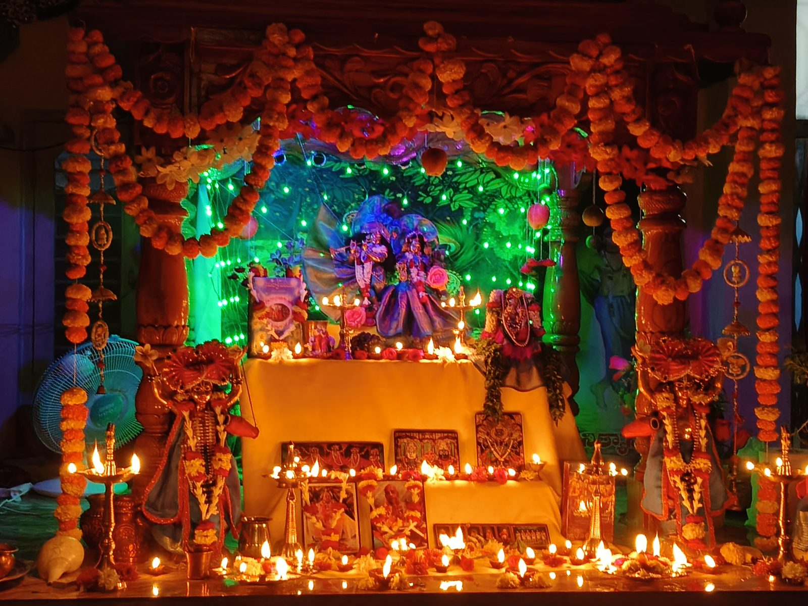
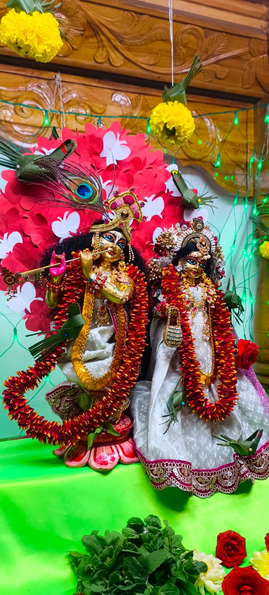
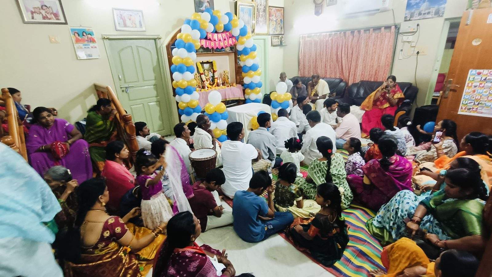
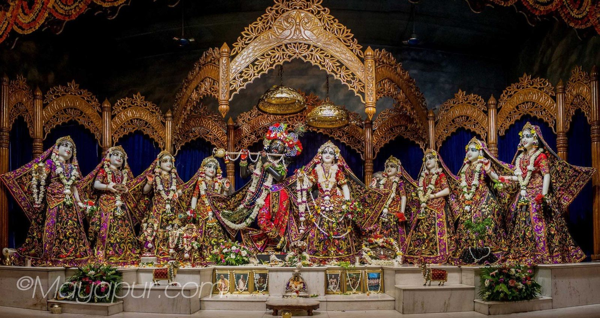

Temple Gallery
A glimpse of devotional activities, festivals, deity worship and spiritual gatherings at ISKCON Rajampet.
ఇస్కాన్ రాజంపేటలో నిర్వహించబడే ఆలయ కార్యక్రమాలు, ఉత్సవాలు, దేవతారాధన మరియు ఆధ్యాత్మిక సంఘటనల పవిత్ర దృశ్యాలు.
International Society for Krishna Consciousness
A glimpse of devotional activities, festivals, deity worship and spiritual gatherings at ISKCON Rajampet.
ఇస్కాన్ రాజంపేటలో నిర్వహించబడే ఆలయ కార్యక్రమాలు, ఉత్సవాలు, దేవతారాధన మరియు ఆధ్యాత్మిక సంఘటనల పవిత్ర దృశ్యాలు.






Devotional services, Abhishekam, Kirtan, and festival moments